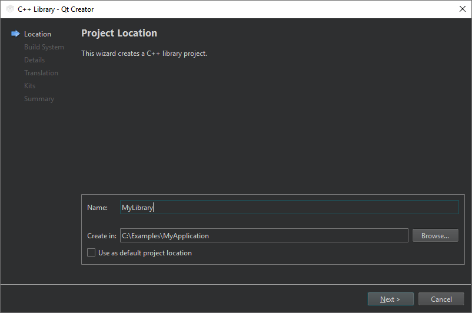
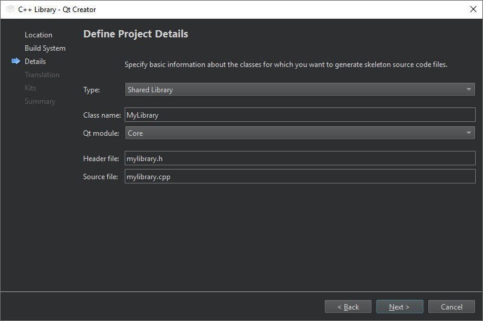
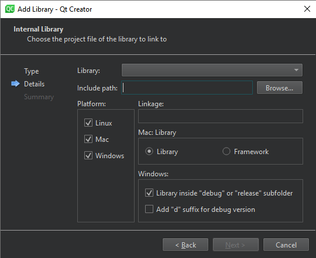

Adding an Internal Library to a qmake Project
You can add a library into a subdirs project. Use wizards to create the project and the library and to link the library against the project.
Note: This tutorial only applies when you select qmake as the build system for the subdirs project.
Creating a shared library
To create a shared library:
- Go to File > New Project, and select Library > C++ Library. If your top level project is a subdirs project or contains one, you may add the library to the project. However, this does not link other libraries from your project against it.
- Select Choose to open the Project Location dialog.

- In Name, give a name for the library. For example, MyLibrary.
- Select Next (on Windows and Linux) or Continue (on macOS) to open the Define Build System dialog.
- In Build system, select qmake.
- Select Next or Continue to open the Define Project Details dialog.

- Select the library type and enter information about the classes for which you want to generate source code files: class name, Qt module, and source and header file names.
- Select Next or Continue until you get to the Project Management dialog. In the Add as a subproject to project list, select a subdirs project. For example, MyApplication.
Linking an application to the library
To link a project to the shared library:
- In the Projects view, right-click the project name to open the context menu and select Add Library > Internal Library > Next.
The wizard instructs the build system to link an existing application project or a library project against the selected library. Here, you add the library that you created above.

- In Library, select mylibrary, and then select Next.
- Select Finish to add the library declaration to the project file.
The wizard adds the following library declaration to the .pro file:
win32:CONFIG(release, debug|release): LIBS += -L$$OUT_PWD/../../../projects/mylib/release/ -lmylib else:win32:CONFIG(debug, debug|release): LIBS += -L$$OUT_PWD/../../../projects/mylib/debug/ -lmylib else:unix: LIBS += -L$$OUT_PWD/../../../projects/mylib/ -lmylib INCLUDEPATH += $$PWD/../../../projects/mylib DEPENDPATH += $$PWD/../../../projects/mylib win32:CONFIG(release, debug|release): PRE_TARGETDEPS += $$OUT_PWD/../../../projects/mylib/release/mylib.lib else:win32:CONFIG(debug, debug|release): PRE_TARGETDEPS += $$OUT_PWD/../../../projects/mylib/debug/mylib.lib else:unix: PRE_TARGETDEPS += $$OUT_PWD/../../../projects/mylib/libmylib.a
See also Add libraries to qmake projects, Add libraries to CMake projects, Add subprojects to projects, Select the build system, Use project wizards, and Creating Projects.